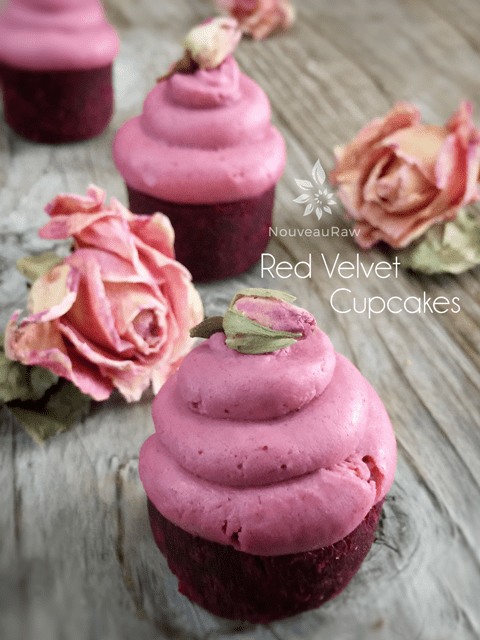

Creating Natural Food Colors
Creating Natural Food Colors

This is sort of a new avenue for me to venture down. I have always been aware of using Turmeric as a safe food dye when I am trying to achieve a yellow hue in recipes, but I haven’t dabbled a whole lot into other colors. For the most part, we don’t need to; raw foods are so vibrant in color as is.
But sometimes it is fun to get a tad bit more creative. So right off the top of my head, I came up with yellow, the red family and green family for food dyes.
Be watchful of the amounts used when trying to create colors that you don’t alter the flavor of your recipe! Always start off with small amounts, you can always add more, but you can’t take away. Other ingredients within your recipe could also affect the color outcome.
For example, if you are using dates in your recipe, which are brown, can you substitute to a different sweetener that isn’t so rich in color such as honey?
Outside of using juiced veggies for coloring, you can also use freeze-dried fruit by first grinding them to a fine powder before adding to the frosting.
When working with more than one color of frosting, I recommend making a large batch of white frosting and then add a concentrated amount of the desired color variations too small portions of frosting. You can see how I did that below when I made various colored frostings for my cake fondue pops. I would love to gather input from others on this subject matter. Please share your comments below.
Let’s start dabbling with color….
- Tumeric is mild Indian spice has been scientifically studied for its protective effects against inflammation and cancer. Turmeric’s health benefits and yellow color are due to a group of flavonoids called Curcuminoids. Medicinal uses of turmeric include the healing of stomach ulcers and the relief of oxidative, free-radical stress in patients with inflammation. Turmeric powder is readily available in the spice section of most supermarkets
- By adding carrot juice, you can create a darker yellow.
Red, Pink, Magenta
- Beet juice or cranberry juice mixed with any icing creates a magnificent pink to deep magenta color.
- Strawberries also work great in creating a pale pink color.
- The cleansing virtue in beet juice is very healing for liver toxicity or bile ailments, like jaundice, hepatitis, food poisoning, diarrhea or vomiting. A squeeze of lime with beets juice heightens the efficacy in treating these ailments. The choline from this beautiful juice detoxifies not only the liver but also the entire system of excessive alcohol abuse, provided consumption is ceased. The cellulose content helps to ease bowel movements. Drinking beets juice regularly will help relieve chronic constipation. There are all sorts of health benefits to beets! They do sell beet powder too.
Orange
- The high level of beta-carotene acts as an antioxidant to cell damage done to the body through regular metabolism. It helps slows down the aging of cells. Vitamin A and antioxidants protect the skin from sun damage. Deficiencies of vitamin A cause dryness to the skin, hair, and nails. Vitamin A prevents premature wrinkling, acne, dry skin, pigmentation, blemishes, and uneven skin tone. (1)
- Carrot juice is great for creating an orange color.
Green
- Spirulina. It contains the most remarkable concentration of nutrients known in any food, plant, grain or herb. It’s the highest protein food- over 60% all digestible vegetable protein. It has the highest concentration of beta carotene, vitamin B-12, iron and trace minerals and the rare essential fatty acid GLA. These make spirulina a great whole food alternative to isolated vitamin and minerals.
- For darker green, blend chlorella powder into the basic white frosting recipe.
Purple
- Blueberries (frozen blueberries, thawed, blended, strained) Blueberries are rich in anti oxidants, Vit. C, B complex, Vit. E & A, copper, selenium, zinc, and iron.
- The more blueberries you use, the darker the color… be careful (as with all colorings) that you don’t use too much, affecting the flavor… unless that is part of the plan.
Here’s how to make light colors (tints, pastels). Adding to white lightens colors.
- Pink: Add a small amount of red to white.
- Salmon pink, coral: Add a small amount of red to white. More red for coral.
- Peach: Add a small amount of orange (yellow and red = orange) to white.
- Cream (off-white): Add a small amount of yellow to white.
- Mint Green: Add a small amount of green to white.
- Lavender: Add a small amount of violet to white.
- Orchid: Add a small amount of purple to white.
© AmieSue.com